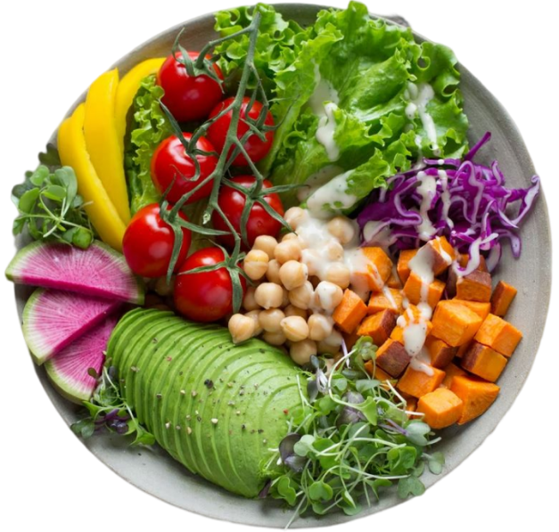
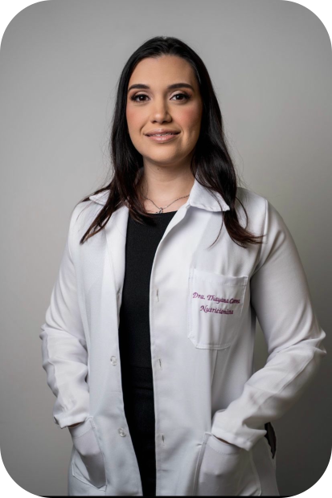
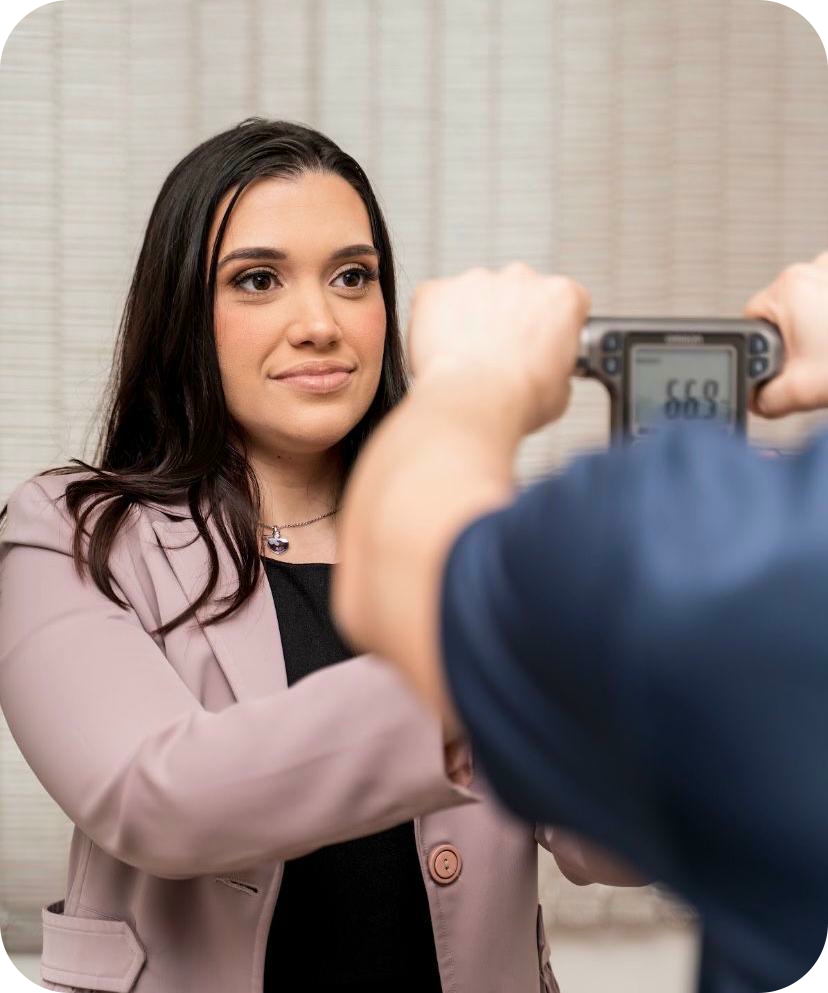

A nutrição é a arte de alimentar vidas.

A nutrição faz parte da vida de todo ser humano, com a ingestão de alimentos saudáveis e necessários, o corpo recebe os nutrientes, vitaminas e minerais que são essenciais para manter o funcionamento adequado, inclusive prevenindo doenças.
Fique em forma com uma alimentação saudável e balanceada.

Uma profissional apaixonada pela profissão.
Nutricionista pela Universidade Federal do Estado do Rio de Janeiro - UNIRIO. Especialista em Fitoterapia - FAVENI. Meu foco é emagrecimento e saúde da mulher, com atendimento acolhedor e contínuo tanto individual quanto em grupo. Proporciono uma relação de afeto e bem estar através da comida, utilizando estratégias comportamentais para resultados duradouros.
Atendimentos online e presencial na Ilha do Governador e Barra da Tijuca - RJ.